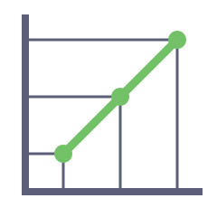

lerp
Docs
Why
lerp
Docs
Why
The command line
usage:
lerp [-concurrency N] open the TUI; the loop runs while it is open
lerp version, --version print the version
lerp login sign in to Linear (loopback OAuth); no flags
lerp logout sign out of Linear and revoke the token; no flags
lerp init --team KEY [--yes] map lerp's queues onto the team's board and write this repo's lerp.toml
That is the whole surface. lerp -h prints it, subcommands included.
lerp
Bare lerp opens the board. Run it from the
directory holding lerp.toml, or anywhere below it.
-concurrency N caps how many agents run at once. The default is 10, and
a value below 1 is refused. Each lane is a whole workspace, so lower it
in a repo whose provision command is heavy.
The TUI needs a terminal. In a pipe or a script, lerp prints usage and
exits 2 rather than quietly starting to claim tickets.
Before the first pass, lerp refuses to start unless every status the config names exists on its team. A team automation that would move a ticket mid-stage is shown at the same moment but only warns. See Why did my ticket skip a stage?.
An advisory lock at .lerp/lock keeps it to one loop per clone. A second
lerp on the same clone fails on the lock rather than racing the first.
q or ctrl+c closes the screen, stops future passes, and waits briefly
for a pass in flight to settle. The agents are never touched. They are
their own processes, with run evidence on disk, and the next lerp
adopts them.
lerp login
lerp login
Signs in to Linear via OAuth 2.0 with PKCE (RFC 8252). An ephemeral
loopback listener on 127.0.0.1 takes the redirect from Linear’s
authorization page in your browser, and the token pair is saved. No
flags.
Login requests read,write permissions (actor=user), never admin.
The token is written to token.json under your user config directory
(~/.config/lerp/token.json on Linux, ~/Library/Application Support/lerp/token.json on macOS), file mode 0600 inside a 0700
directory, and the access token renews before expiry.
lerp logout
lerp logout
Sends a best-effort revocation request to Linear and deletes the local
token.json. No flags.
lerp init
lerp init --team LERP --team-name "Lerp"
| Flag | Meaning |
|---|---|
--team KEY |
the Linear team key, the LERP in LERP-42. Required. |
--team-name NAME |
display name, used only if the team must be created |
--yes |
take the stock answer to every question. Piped input implies it |
Init creates the Linear team if it is missing, fits the stock pipeline
onto the board through a short conversation, writes lerp.toml, and
appends .lerp/ to the repository’s .gitignore.
Quickstart walks the whole of it.
It is safe to repeat. It creates only missing Linear structure, adds
nothing to .gitignore twice, and never replaces an existing
lerp.toml. On a repeat run it checks that the existing config serves
the requested team and that the statuses its queues name exist.
lerp version
Prints the version the binary was stamped with, and --version answers
the same question. A release archive carries its tag, make install
stamps git describe with a dirty tree marked, and a go install build
reports the module version Go records. Only a build with no VCS info at
all reports the literal dev.
When the local update cache knows a newer release tag, lerp version
prints a second line pointing to brew upgrade lerp. It makes no network
request of its own, and reads only what a previous board session cached.
Authentication
Every lerp command needs a Linear credential. LINEAR_API_KEY wins if it
is set, otherwise lerp reads the token.json that lerp login stored,
and with neither it exits telling you to run lerp login.
Prefer lerp login. Its tokens are scoped (read,write, no admin) and
expiring, and OAuth clients get Linear’s 5,000 requests per hour. A
personal API key defaults to full workspace access, never expires, and
shares the 2,500 per hour personal limit.
Either credential is lerp’s alone. Stored tokens are never passed to a
provision, dispose or runner command, and LINEAR_API_KEY is dropped
from lerp’s environment after it is read.
Environment
| Variable | What it does |
|---|---|
LINEAR_API_KEY |
the Linear personal API key, supported as a fallback for headless servers and CI. When set, it takes precedence over the token lerp login stores. Defaults to your full workspace access unless restricted at creation. Dropped from lerp’s own environment after reading, never passed to a provision, dispose or runner command. |
LERP_BACKGROUND |
light or dark, saying which half of the palette to draw. Read once at startup, and any other value is an error. |
LERP_NO_UPDATE_CHECK |
any non-empty value disables the daily anonymous GitHub releases check for newer versions. |
LERP_OPEN |
desktop rewrites ticket URLs to Linear’s linear:// deep-link scheme on o, opening the desktop app instead of the browser. Unset or any other value keeps https://. |
NO_COLOR |
any value turns colour off entirely. |
XDG_STATE_HOME |
overrides where telemetry is written ($XDG_STATE_HOME/lerp/runs.jsonl, defaulting to ~/.local/state/lerp/runs.jsonl). |
Lerp otherwise picks its palette by asking the terminal for its
background colour. A terminal that does not answer, tmux and screen among
them, is read as dark. That is what LERP_BACKGROUND is for.
Lerp sets variables of its own on the commands it starts, LERP_LANE,
LERP_TICKET_ID and LERP_WORKSPACE on a provision or dispose command,
and LERP_TICKET on a runner. Those are Configuration’s
side of the contract.
Cleanup and uninstall
- Remove the binary.
brew uninstall lerpfor a brew install,make uninstallfrom a clone, or delete the binary from$HOME/.local/binor yourGOBIN. - Remove stored credentials.
lerp logout, or deletetoken.jsonfrom your user config directory. - Remove local state.
rm -rf .lerp/once all agents have stopped, since run evidence is how the nextlerpadopts or reaps them. Workspaces under.lerp/workspaces/are git worktrees, sogit worktree prunecleans up stray registrations. To clear run metrics too, remove$XDG_STATE_HOME/lerp/runs.jsonl(or~/.local/state/lerp/runs.jsonl).
Linear workflow statuses created by lerp init remain on your team until
you delete or archive them in Linear’s settings.
